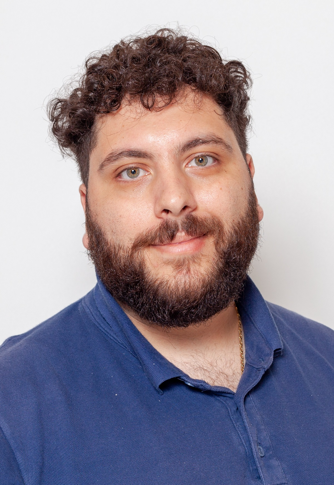

George Paschalis' Resume

Summary
Junior Software / Web Developer 17/01/97
Education
-
Student at Aristotele University of Thessaloniki
-
Graduate of General High School
3rd Lyceum of Ampelokipon Thessaloniki (16.9)
Work experience
-
IT Research Soldier
(Office of the Candidate Selection Department of the S.S.A.S.)
- Development and management of the Database , Information of the candidates of the S.S.A.S.
- Computerization and administration of the Preliminary Examinations for the academic year 2021-2022
- Entry, processing and posting of results on the website
- Cooperation with the Examination Committees
-
Tutoring to students
- First grade (Mathematics)
- Second high school EPAL (Computer Science, Mathematics)
- Third high school EPAL (Computer Science, Mathematics)
Skills
Java , Python , C , C++ , MySQL , Git , Html/Css , Object Oriented programming ,Microsoft office, Visual Studio,Netbeans
Awards and Certifications
-
Thessaloniki #JobFestival 2022
- Work-life balance: ways to achieve it
- Career date for your next job
- Work from home: What you need to know
- How to succeed in the selection interview
-
Udemy
- Master C++ Programming From Beginner To Advance - C++ Course
- The Complete 2023 Web Development Bootcamp (not finished yet)
Other
{kind=link}